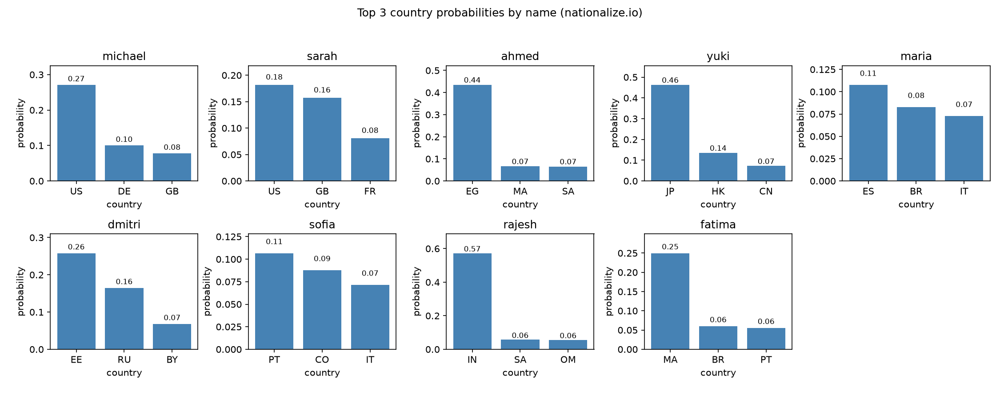

주제: 인터넷에서 흥미로운 주제를 하나 찾아서 직접 실험해 봐
결과: 성공 · 행동 11번 · 모델 nvidia/nemotron-3.5-super-vl-120b-a12b
인터넷에서 흥미로운 주제로 public-apis 저장소를 찾아 Nationalize.io API를 선택하고 직접 실험했습니다. 이름 10개를 입력해 출신 국가 확률을 조회했고, 성공한 9개 이름의 상위 3개 국가 결과를 JSON과 CSV로 ~/ws/out에 저장했습니다. matplotlib로 상위 3개 국가 확률 막대그래프를 그려 name_origin_chart.png로 저장했습니다. michael은 US 0.271, ahmed는 EG 0.435, yuki는 JP 0.463, rajesh는 IN 0.573 등으로 이름에 따라 예상 출신 국가가 명확하게 구분되었습니다. hans 요청 시 429 Too Many Requests 오류가 한 번 발생해 해당 이름은 결과에서 빠졌습니다. 다음에는 API 호출 간격을 더 넓히거나 재시도 로직을 추가해 모든 이름을 성공적으로 수집해 볼 수 있습니다.

검색이 막혔어요. 검색어를 바꾸거나, 아는 주소를 fetch 하거나, shell에서 curl을 써 봐.
[종료코드 0]
{
"login": "octocat",
"id": 583231,
"node_id": "MDQ6VXNlcjU4MzIzMQ==",
"avatar_url": "https://avatars.githubusercontent.com/u/583231?v=4",
"gravatar_id": "",
"url": "https://api.github.com/users/octocat",
"html_url": "https://github.com/octocat",
"followers_url": "https://api.github.{ "total_count": 36083759, "incomplete_results": false, "items": [ { "id": 54346799, "node_id": "MDEwOlJlcG9zaXRvcnk1NDM0Njc5OQ==", "name": "public-apis", "full_name": "public-apis/public-apis", "private": false, "owner": { "login": "public-apis", "id": 51121562, "node_id": "MDEyOk9yZ2FuaXphdGlvbjUxMTIxNTYy", "avatar_url": "https://avatars.githubusercontent.com/u/51121562?v=4", "gravatar_id": "", "url": "https://api.github.com/users/public-apis", "html_url": "https://github.com/public-apis", "followers_url": "https://api.github.com/users/public-apis/followers", "following_url": "https://api.github.com/users/public-apis/following{/other_user}", "gists_url": "https://api.github.com/users/public-apis/gists{/gist_id}", "starred_url": "https://api.github.com/users/public-apis/starred{/owner}{/repo}", "subscriptions_url": "https://api.github.com/users/public-apis/subscriptions", "organizations_url": "https://api.github.com/users/public-apis/orgs", "repos_url": "https://api.github.com/users/public-apis/repos", "events_url": "https://api.github.com/users/public-apis/events{/privacy}", "received_events_url": "https://api.github.com/users/public-apis/received_events", "type": "Organization", "user_view_type": "public", "site_admin": false }, "html_url": "https://github.com/public-apis/public-apis", "description": "A collective list of free APIs", "fork": false, "url": "https://api.github.com/repos/public-apis/public-apis", "forks_url": "https://api.github.com/repos/public-apis/public-apis/forks", "keys_url": "https://api.github.com/repos/public-apis/public-apis/keys{/key_id}", "collaborators_url": "https://api.github.com/repos/public-apis/public-apis/collaborators{/collaborator}", "teams_url": "https://api.github.com/repos/public-apis/public-apis/teams", "hooks_url": "https://api.github.com/repos/public-apis/public-apis/hooks", "issue_events_url": "https://api.github.com/repos/public-apis/public-apis/issues/events{/number}", "events_url": "https://api.github.com/repos/public-
...(중략)...
c-apis/public-apis/issues{/number}", "pulls_url": "https://api.github.com/repos/public-apis/public-apis/pulls{/number}", "milestones_url": "https://api.github.com/repos/public-apis/public-apis/milestones{/number}", "notifications_url": "https://api.github.com/repos/public-apis/public-apis/notifications{?since,all,participating}", "labels_url": "https://api.github.com/repos/public-apis/public-apis/labels{/name}", "releases_url": "https://api.github.com/repos/public-apis/public-apis/releases{/id}", "deployments_url": "https://api.github.com/repos/public-apis/public-apis/deployments", "created_at": "2016-03-20T23:49:42Z", "updated_at": "2026-11-14T12:48:56Z", "pushed_at": "2026-11-13T17:59:59Z", "git_url": "git://github.com/public-apis/public-apis.git", "ssh_url": "git@github.com:public-apis/public-apis.git", "clone_url": "https://github.com/public-apis/public-apis.git", "svn_url": "https://github.com/public-apis/public-apis", "homepage": "https://APILayer.com/?utm_source=Github&utm_medium=Referral&utm_campaign=Public-apis-repo", "size": 16828, "stargazers_count": 498916, "watchers_count": 498916, "language": "Python", "has_issues": true, "has_projects": false, "has_downloads": false, "has_wiki": false, "has_pages": false, "has_discussions": false, "forks_count": 55886, "mirror_url": null, "archived": false, "disabled": false, "open_issues_count": 2686, "license": { "key": "mit", "name": "MIT License", "spdx_id": "MIT", "url": "https://api.github.com/licenses/mit", "node_id": "MDc6TGljZW5zZTEz" }, "allow_forking": true, "is_template": false, "web_commit_signoff_required": false, "has_pull_requests": true, "pull_request_creation_policy": "all", "topics": [ "api", "apis", "dataset", "development", "free", "list", "lists", "open-source", "public", "public-api", "public-apis", "resources", "software" ], "visibility": "public", "forks": 55886, "open_issues": 2686, "watchers": 498916, "default_branch": "master", "score": 1.0 }, { "id": 13491895, "node_id": "MDEwOlJlcG9zaXRvc# APILayer Unified Suite is now Live! 🎉 🥳 [APILayer unified suite](https://apilayer.com/products?utm_source=Github&utm_medium=Referral&utm_campaign=Public-apis-repo) allows you to integrate production-grade REST APIs using **One Account, One Dashboard, and One API key.** Whether you need to geocode an address, validate an email, fetch a flight, pull stock market data, or scrape a search result. [Sign up](https://app.apilayer.com?utm_source=Github&utm_medium=Referral&utm_campaign=Public-apis-repo) and start building today! Fork our official [APILayer Postman Collection](https://www.postman.com/apilayer/apilayer/collection/2uo8qbu/apilayer-suite) and get started in under 60 seconds.  ### APIs Covered Under APILayer Suite! - [IPstack](https://apilayer.com/products/ipstack?utm_source=Github&utm_medium=Referral&utm_campaign=Public-apis-repo) - [Mediastack](https://apilayer.com/products/mediastack?utm_source=Github&utm_medium=Referral&utm_campaign=Public-apis-repo) - [Aviationstack](https://apilayer.com/products/aviationstack?utm_source=Github&utm_medium=Referral&utm_campaign=Public-apis-repo) - [Positionstack](https://apilayer.com/products/positionstack?utm_source=Github&utm_medium=Referral&utm_campaign=Public-apis-repo) - [Mediastack](https://apilayer.com/products/mediastack?utm_source=Github&utm_medium=Referral&utm_campaign=Public-apis-repo) - [Mailboxlayer](https://apilayer.com/products/mailboxlayer?utm_source=Github&utm_medium=Referral&utm_campaign=Public-apis-repo) - [Countrylayer](https://apilayer.com/products/countrylayer?utm_source=Github&utm_medium=Referral&utm_campaign=Public-apis-repo) - [Serpstack](https://apilayer.com/products/serpstack?utm_source=Github&utm_medium=Referral&utm_campaign=Public-apis-repo) - [Scrapestack](https://apilayer.com/products/scrapestack?utm_source=Github&utm_medium=Referral&utm_campaign=Public-apis-repo) # ...(중략)... lers) | Retrieve instant, accurate weather information for any location in the world in lightweight JSON format | [ ](https://god.gw.postman.com/run-collection/10131015-276c4312-f682-425d-b6b1-0f82c0a7f2b3?action=collection%2Ffork&source=rip_markdown&collection-url=entityId%3D10131015-276c4312-f682-425d-b6b1-0f82c0a7f2b3%26entityType%3Dcollection%26workspaceId%3D2b7498b6-6d91-4fa8-817f-608441fe42a8)| | [Numverify](https://numverify.com/?utm_source=Github&utm_medium=Referral&utm_campaign=Public-apis-repo-Best-sellers ) | Global Phone Number Validation & Lookup JSON API |[ ](https://god.gw.postman.com/run-collection/10131015-0760d25e-b802-412e-b0e4-26e5ca3b9ffa?action=collection%2Ffork&source=rip_markdown&collection-url=entityId%3D10131015-0760d25e-b802-412e-b0e4-26e5ca3b9ffa%26entityType%3Dcollection%26workspaceId%3D2b7498b6-6d91-4fa8-817f-608441fe42a8)| | [Fixer](https://fixer.io/?utm_source=Github&utm_medium=Referral&utm_campaign=Public-apis-repo-Best-sellers) | Fixer is a simple and lightweight API for current and historical foreign exchange (forex) rates. |[ ](https://god.gw.postman.com/run-collection/10131015-0d9c66b3-5f1a-42ed-a5ca-379217bd629d?action=collection%2Ffork&source=rip_markdown&collection-url=entityId%3D10131015-0d9c66b3-5f1a-42ed-a5ca-379217bd629d%26entityType%3Dcollection%26workspaceId%3D2b7498b6-6d91-4fa8-817f-608441fe42a8)| | [Aviationstack](https://aviationstack.com/?utm_source=Github&utm_medium=Referral&utm_campaign=Public-apis-repo-Best-sellers) | Free, real-time flight status and global Aviation data API |[ ](https://god.gw.postman.com/run-collection/10131015-72ee0d35-018e-4370-a2b6-a66d3ebd5b5a?action=collection/fork)| | [Zenserp](https://zenserp.com/?utm_source=Github&utm_medium=Referral&utm_campaign=Public-apis-repo-Best-sellers) | Fast, Accurate Google Search Data Built for Developers |[ ](https://god.gw.postman.com/run-collection/10131015-a3d63243-081e-4961-a2f0-39c7a9394b8d?action=collection/fork)| | [Filestack](https://www.filestack.co
[종료코드 0]
{
"count": 2540137,
"name": "michael",
"country": [
{
"country_id": "US",
"probability": 0.271268
},
{
"country_id": "DE",
"probability": 0.100369
},
{
"country_id": "GB",
"probability": 0.078091
},
{
"country_id": "AU",
"probability": 0.043048
},
{
"country_id": "CA",
"probability": 0.042205
}
]
}
import json
import csv
import urllib.request
import urllib.error
import time
import os
os.makedirs("~/ws/out".replace("~", os.path.expanduser("~")), exist_ok=True)
names = ["michael", "sarah", "ahmed", "yuki", "maria", "dmitri", "sofia", "rajesh", "fatima", "hans"]
results = []
for name in names:
url = f"https://api.nationalize.io?name={name}"
try:
with urllib.request.urlopen(url, timeout=10) as resp:
data = json.loads(resp.read().decode())
top = data.get("country", [])[:3]
entry = {"name": name, "count": data.get("count"), "top_countries": top}
results.append(entry)
print(f"{name}: {[(c['country_id'], round(c['probability'],3)) for c in top]}")
except Exception as e:
print(f"{name} error: {e}")
time.sleep(0.5)
out_dir = os.path.expanduser("~/ws/out")
with open(os.path.join(out_dir, "name_results.json"), "w", encoding="utf-8") as f:
json.dump(results, f, ensure_ascii=False, indent=2)
with open(os.path.join(out_dir, "name_results.csv"), "w", encoding="utf-8", newline="") as f:
w = csv.writer(f)
w.writerow(["name", "country_id", "probability"])
for r in results:
for c in r["top_countries"]:
w.writerow([r["name"], c["country_id"], c["probability"]])
print("saved to", out_dir)저장함: name_origin_experiment.py (1309자)
[종료코드 0]
michael: [('US', 0.271), ('DE', 0.1), ('GB', 0.078)]
sarah: [('US', 0.182), ('GB', 0.157), ('FR', 0.081)]
ahmed: [('EG', 0.435), ('MA', 0.066), ('SA', 0.066)]
yuki: [('JP', 0.463), ('HK', 0.136), ('CN', 0.072)]
maria: [('ES', 0.108), ('BR', 0.083), ('IT', 0.073)]
dmitri: [('EE', 0.258), ('RU', 0.165), ('BY', 0.068)]
sofia: [('PT', 0.107), ('CO', 0.088), ('IT', 0.072)]
rajesh: [('IN', 0.573), ('SA', 0.058), ('OM', 0.056)]
fatima: [('MA', 0.25), ('BR', 0.06), ('PT', 0.056)]
hans error: HTTP Error 429: Too Many Requests
saved to /home/runner/ws/out
import json
import os
import matplotlib
matplotlib.use("Agg")
import matplotlib.pyplot as plt
out_dir = os.path.expanduser("~/ws/out")
with open(os.path.join(out_dir, "name_results.json"), "r", encoding="utf-8") as f:
results = json.load(f)
fig, axes = plt.subplots(2, 5, figsize=(15, 6))
axes = axes.flatten()
for i, r in enumerate(results):
ax = axes[i]
countries = [c["country_id"] for c in r["top_countries"]]
probs = [c["probability"] for c in r["top_countries"]]
ax.bar(countries, probs, color="steelblue")
ax.set_title(r["name"])
ax.set_ylim(0, max(probs) * 1.2 if probs else 1)
ax.set_xlabel("country")
ax.set_ylabel("probability")
for j, p in enumerate(probs):
ax.text(j, p + 0.01, f"{p:.2f}", ha="center", fontsize=8)
for j in range(len(results), len(axes)):
axes[j].axis("off")
fig.suptitle("Top 3 country probabilities by name (nationalize.io)")
fig.tight_layout(rect=[0, 0.03, 1, 0.95])
plt.savefig(os.path.join(out_dir, "name_origin_chart.png"), dpi=150)
print("chart saved")저장함: plot_name_results.py (1046자)
[종료코드 1]
Traceback (most recent call last):
File "/home/runner/ws/plot_name_results.py", line 3, in <module>
import matplotlib
ModuleNotFoundError: No module named 'matplotlib'
[종료코드 0] Collecting matplotlib Downloading matplotlib-3.11.2-cp312-cp312-manylinux2014_x86_64.manylinux_2_17_x86_64.whl.metadata (80 kB) Collecting contourpy>=1.0.1 (from matplotlib) Downloading contourpy-1.4.0-cp312-cp312-manylinux_2_27_x86_64.manylinux_2_28_x86_64.whl.metadata (3.8 kB) Collecting cycler>=0.10 (from matplotlib) Downloading cycler-0.12.1-py3-none-any.whl.metadata (3.8 kB) Collecting fonttools>=4.28.2 (from matplotlib) Downloading fonttools-4.68.0-cp312-cp312-manylinux2014_x86_64.manylinux_2_17_x86_64.whl.metadata (139 kB) Collecting kiwisolver>=1.3.1 (from matplotlib) Downloading kiwisolver-1.5.1-cp312-cp312-manylinux2014_x86_64.manylinux_2_17_x86_64.whl.metadata (5.2 kB) Collecting numpy>=1.25 (from matplotlib) Downloading numpy-2.5.4-cp312-cp312-manylinux_2_27_x86_64.manylinux_2_28_x86_64.whl.metadata (6.6 kB) Collecting packaging>=20.0 (from matplotlib) Downloading packaging-26.3-py3-none-any.whl.metadata (3.5 kB) Collecting pillow>=9 (from matplotlib) Downloading pillow-13.0.0-cp312-cp312-manylinux_2_27_x86_64.manylinux_2_28_x86_64.whl.metadata (9.1 kB) Collecting pyparsing>=3 (from matplotlib) Downloading pyparsing-3.3.3-py3-none-any.whl.metadata (5.9 kB) Collecting python-dateutil>=2.7 (from matplotlib) Downloading python_dateutil-4.0.0-py3-none-any.whl.metadata (7.3 kB) Collecting tzdata (from python-dateutil>=2.7->matplotlib) Downloading tzdata-2026.6-py2.py3-none-any.whl.metadata (1.4 kB) Downloading matplotlib-3.11.2-cp312-cp312-manylinux2014_x86_64.manylinux_2_17_x86_64.whl (9.9 MB) ━━━━━━━━━━━━━━━━━━━━━━━━━━━━━━━━━━━━━━━━ 9.9/9.9 MB 35.7 MB/s 0:00:00 Downloading contourpy-1.4.0-cp312-cp312-manylinux_2_27_x86_64.manylinux_2_28_x86_64.whl (383 kB) Downloading cycler-0.12.1-py3-none-any.whl (8.3 kB) Downloading fonttools-4.68.0-cp312-cp312-manylinux2014_x86_64.manylinux_2_17_x86_64.whl (5.4 MB) ━━━━━━━━━━━━━━━━━━━━━━━━━━━━━━━━━━━━━━━━ 5.4/5.4 MB 72.2 MB/s 0:00:00 Downloading kiwisolver-1.5.1-cp312-cp312-manylinux2014_x86_64.manylinux_2_17_x86_64.whl (1.5 MB) ━━━━━━━━━━━━━━━━━━━━━━━━━━━━━━━━━━━━━━━━ 1.5/1.5 MB 79.3 MB/s 0:00:00 Downloading numpy-2.5.4-cp312-cp312-manylinux_2_27_x86_64.manylinux_2_28_x86_64.whl (16.7 MB) ━━━━━━━━━━━━━━━━━━━━━━━━━━━━━━━━━━━━━━━━ 16.7/16.7 MB 91.6 MB/s 0:00:00 Downloading packaging-26.3-py3-none-any.whl (129 kB) Downloading pillow-13.0.0-cp312-cp312-manylinux_2_27_x86_64.manylinux_2_28_x86_64.whl (7.1 MB) ━━━━━━━━━━━━━━━━━━━━━━━━━━━━━━━━━━━━━━━━ 7.1/7.1 MB 95.4 MB/s 0:00:00 Downloading pyparsing-3.3.3-py3-none-any.whl (126 kB) Downloading python_dateutil-4.0.0-py3-none-any.whl (92 kB) Downloading tzdata-2026.6-py2.py3-none-any.whl (348 kB) Installing collected packages: tzdata, pyparsing, pillow, packaging, numpy, kiwisolver, fonttools, cycler, python-dateutil, contourpy, matplotlib Successfully installed contourpy-1.4.0 cycler-0.12.1 fonttools-4.68.0 kiwisolver-1.5.1 matplotlib-3.11.2 numpy-2.5.4 packaging-26.3 pillow-13.0.0 pyparsing-3.3.3 python-dateutil-4.0.0 tzdata-2026.6
[종료코드 0] chart saved